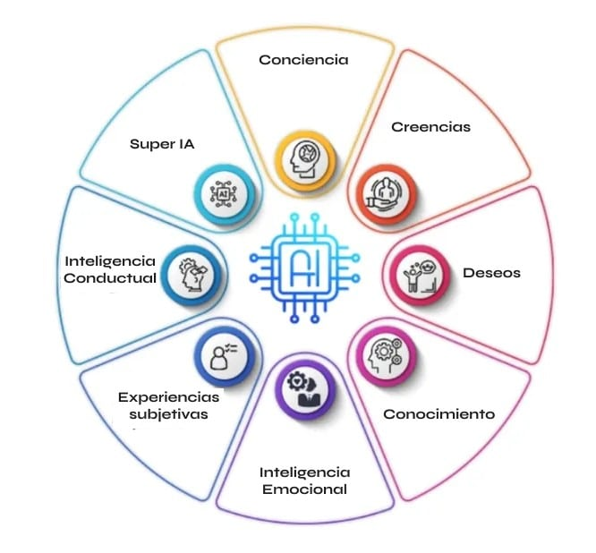

Inteligencia (ANI)
La Inteligencia Artificial Estrecha (ANI), también conocida como Inteligencia Artificial Débil, es un tipo de IA diseñada para realizar tareas específicas y limitadas. Se diferencia de la Inteligencia Artificial General (AGI) en que esta última busca crear sistemas que puedan realizar cualquier tarea intelectual que un ser humano puede hacer. La mayoría de las aplicaciones de IA que vemos hoy en día entran en la categoría de ANI.
Características de la ANI:
Enfoque en tareas específicas:
La ANI se concentra en una sola tarea o un conjunto limitado de tareas, como jugar al ajedrez, traducir idiomas o reconocer imágenes.
Limitaciones en el aprendizaje y la generalización:
No puede transferir el conocimiento aprendido de una tarea a otra, ni resolver problemas fuera de su dominio específico.
Alto rendimiento en tareas específicas:
A pesar de sus limitaciones, la ANI puede alcanzar niveles de rendimiento muy altos, e incluso superar a los humanos, en las tareas para las que ha sido diseñada.
Ejemplos de ANI:
Asistentes virtuales:
Siri, Alexa, Google Assistant Sistemas de recomendación
Netflix, Spotify Vehículos autónomos.
Coches sin conductor
Chatbots:
Aplicaciones que interactúan con usuarios a través de texto
Reconocimiento facial:
Sistemas que identifican personas en imágenes o videos
Ventajas de la ANI:
Eficiencia en tareas específicas:
Permite automatizar procesos y mejorar la productividad en áreas concretas.
Bajo costo de implementación:
En comparación con la inteligencia artificial general, su desarrollo y despliegue son menos costosos.
Fácil de entrenar y mantener:
Su enfoque en tareas específicas facilita su entrenamiento y mantenimiento.
Desventajas de la ANI:
Limitaciones en la generalización:
No puede adaptarse a situaciones nuevas o inesperadas fuera de su ámbito de entrenamiento.
Posibilidad de sesgos:
Los datos con los que se entrena la ANI pueden contener sesgos, lo que puede llevar a resultados injustos o discriminatorios.
Riesgos de seguridad:
istemas vulnerables a ataques cibernéticos o mal uso.
En resumen, la ANI es un tipo de inteligencia artificial que se ha convertido en una herramienta valiosa en diversas industrias. Aunque tiene sus limitaciones, su capacidad para automatizar tareas específicas y mejorar la eficiencia la convierte en una tecnología relevante en la actualidad.

Hecho por Michael Gonzales en 2025